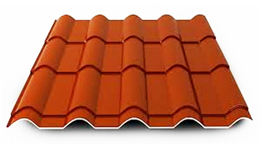

Металлочерепица
Металлочерепица — это один из совеременных видов кровельного покрытия в 21 веке, который изготовляется из стального оцинкованного листа с покрытием слоя цинка и полимерного покрытия. Производство металлочерепицы выполняется из украинского металла завода «Металлы и Полимеры», а также европейского металла группы компании ArcelorMittal (Польша, Германия, Бельгия). На весь ассортимент металлочерепицы предоставляется гарантия 10 лет, а также сертификаты соответствия качества согласно ГОСТ.
Мы предлагаем 2 вида покрытия:
Полиестер – глянцевое покрытие, толщиной 25 микрон, имеющее хорошую устойчивость к механическим и химическим явлениям и большой выбор цветовой гаммы.
Матовый полиестер – шороховатое покрытие, толщиной 35 микрон, с максимальной устойчивостью к ультрафиолетовым лучам и механическим повреждениям.
Чтобы купить металлочерепицу нашего производства в Киеве, области или других регионах Украины, обратитесь к нашим менеджерам по телефону (044) 561-40-41, (067) 527-95-06, (063) 890-20-45. Давайте свои рекомендации друзьям, знакомым, начальникам и получайте специальную скидку на весь ассортимент металлической продукции нашего производства. Рады будем видеть Вас в нашем офисе.
Металлочерепица «Классик»
Технические характеристики
| Длина модуля: | 350 мм |
| Высота шага: | 23 + 20 = 43 мм |
| Ширина Полная-Эффективная: | 1,200 — 1,120 м |
| Уклон минимальный: | 14° (1:4) |
| Вес 1 м2: | ≈ 4,31 кг/м2 |
| Толщина металла | 0,45 — 0,50 мм |
| Длина листа | от 0,85 до 6,10 мм |
| Покрытие | Полиестер, матт |
Преимуществом металлочерепицы КЛАССИК является небольшая высота волны, которая придает зданию благородный облик. Один квадратный метр металлочерепицы весит около 5 кг. Вместе с металлочерепицей Вы можете заказать полный набор комплектующих кровельных деталей, а также водосточную систему.
Металлочерепица «Опал»
Технические характеристики
| Длина модуля: | 350 /400 мм |
| Высота шага: | 32 + 20 = 52 мм |
| Ширина полная/эффективная: | 1,180 — 1,080 м |
| Товщина металу | 0,45 — 0,55 мм |
| Вес 0,5 мм: | ≈ 4,48 кг/м2 |
| Длина листа | от 0,86 до 6,11 мм |
| Уклон минимальный: | 14° (1:4) |
| Покрытие | Полиестер, матт |
Металлочерепица Опал сочетает в себе все достоинства традиционной металлочерепицы и элегантность натуральных материалов. Металлочерепица Опал является эксклюзивным видом металлочерепицы во всем мире. С этой металлочерепицей Ваш дом станет изысканным и неповторимым. В комплекте Вы можете также заказать полный набор кровельных аксессуаров и водосточную систему в сочетании Вашей крыши и фасада.